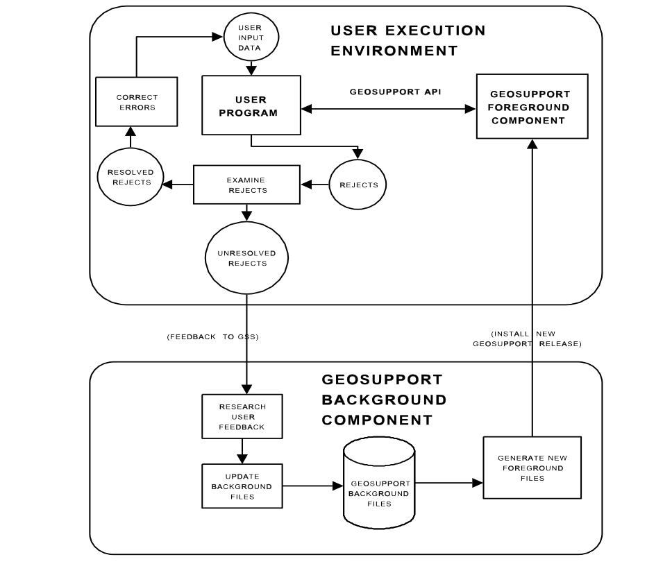

I.5 Overview of System Architecture
The Geosupport System consists of two major components called the foreground component and the background component,as well as the utility programs GBAT, GOAT and AIMZ. The relationships among the foreground component, the background component and the user application program are described in this section and are illustrated in Figure I-1 below.
Both the foreground component and the background component consist of both software and files. Users access the foreground component either directly from user-written programs via Geosupport API calls, or indirectly via the utility programs, which in turn access the foreground component via the Geosupport API. The foreground component and the utility programs are installed on IBM mainframes at the city computer centers listed in Appendix 7. Users do not access the background component, and it is not described in this document beyond the brief remarks in this section.
The Foreground Component
The files of the foreground component contain the geographic data that the foreground software requires to process user requests. User programs never read the foreground files directly; they are read only by the Geosupport foreground software.
The foreground software processes the input data passed to it by a calling user program. It performs such tasks as standardizing input street names and house numbers, reading foreground files, and returning information retrieved from those files, or appropriate error codes and messages, to the user program.
The Background Component
The background component contains a set of interrelated base files of the city’s geography. The background files are continually updated and validated by the GSS staff. The background software includes software for updating and validating the background files and software for generating new foreground files from the background files.
The background work takes place partly on an IBM mainframe at the centralized data center operated by the City of New York Department of Information Technology and Telecommunications (DoITT) and on PCs located at the Department of City Planning, and partly in an enterprise Geographic Information System (GIS) software environment running on DoITT’s servers..
The background component, including GSS’s GIS environment, is not accessible to users. To a user application, Geosupport appears to consist only of conventional data processing technology, and does not appear to include computer mapping capabilities. However, Geosupport, through its geocoding functionality, particularly its provision of spatial coordinates for an address, tax lot, or intersection, can facilitate the use of separate computer mapping or GIS software to display geographically-related user data graphically. In addition, many of GSS’s background files are available in ESRI format for free download as part of our BYTES of the BIG APPLETM product line which can be used in conjunction with a user’s Geosupport output.
Foreground Component Updating: New File Releases
All of the foreground files are read-only files. They remain in production, unchanged, until GSS requests that DoITT replace them with a new set containing updated data. The set of foreground files in production at a particular time constitutes a release,and is identified by a release designator such as Release15D. The first two characters of the release designator are the last two digits of the calendar year in which the release was deployed.
In the background component, GSS periodically performs a complex series of steps, called the Geosupport production cycle,to generate a new set of foreground files, quality assure those files, and deploy them for user access as a new Geosupport release.
Each new release is first implemented for user access on the DoITT mainframe. This is done in coordination with DoITT staff, who play an active role in migrating the files of the new release to all user-accessible CICS regions and the batch environment. After the new release is in production at DoITT for a brief testing period, GSS staff disseminate the new release to the other computer centers where Geosupport is installed.The Desktop Edition also becomes available shortly after the new release is in production on the DoITT mainframe.
For many applications, no special user action is required when a new release of Geosupport files is implemented; the application will continue to run as before. Of course, under the new release, Geosupport may respond differently to a particular set of input data than it had under previous releases. For example, it may return different output information for a given set of input data, it may accept input data that had previously been rejected, and it may reject input data that had previously been accepted.
In some applications in which data items obtained from Geosupport are stored in an application file, it may be appropriate for the user to update those stored items to reflect changes in each new Geosupport release. This is referred to as resynchronizing the user file with respect to the new Geosupport release. Resynchronizing is particularly important for applications that use Geosupport-provided items, such as street codes, in geographic retrieval keys. For such applications, the user should develop a resynchronization procedure, and should run that procedure each time a new release of Geosupport is implemented. Resynchronization is discussed further in Chapter IV.
Foreground Component Updating: New Software Versions and Vestigial Features
From time to time, GSS makes changes to the foreground software, to enhance the system or correct errors. The foreground software in production is identified by a version number, such as Version13.1 etc. (Note that the foreground software is identified as a version while the foreground files are identified as a release.) On occasion, new foreground file releases and new foreground software versions are installed in production independently of one another, and therefore there is not a one-to-one correspondence between file releases and software versions. Typically, a file release and a software version are implemented simultaneously in what is referred to as a coordinated release.
Since the year 2013, the numbering scheme for a Software Version is yy.n, where ‘yy’ are the last two digits of the year and ‘n’ is the sequence number of the software version in that year, starting from ‘1’, e.g. Version 13.1. The numbering scheme for a Data Release is yy-x (or yyx), where ‘yy’ are the last two digits of the year and ‘x’ is the sequence letter of the data release in that year, starting from ‘A’, e.g. Release 15A).
It is a fundamental policy of GSS to strive to minimize the impact of Geosupport enhancements on existing applications. Whenever possible, enhancements are designed so that existing applications that do not require the new Geosupport feature need not be modified. In other words, enhancements are generally ‘transparent’ to existing applications. Although this is generally the policy of GSS, please see the SUMMARY OF CHANGES AND NEW FEATURES, at the beginning of this manual, for any item that could possibly affect your applications.
Over the years, numerous enhancements have been made to Geosupport, and virtually none of them have required existing applications to be modified or recompiled (except as necessary to take advantage of new features). As a consequence of this approach, Geosupport has a number of vestigial features. These are elements of the system, such as data items, work area formats, batch JCL, or entire functions that are still operational but are obsolete or have been superseded.
Vestigial features will continue to be supported for the most part, so that existing applications that use them will continue to run without modification. However, vestigial features will not be enhanced. Moreover, vestigial features have that status because of some shortcoming.Users are strongly encouraged to update their existing applications to eliminate all usage of vestigial features. All new applications should be designed to avoid any usage of vestigial features.
Vestigial features are mentioned in appropriate sections of this document, and are identified as such, but in many cases they are not documented in detail. An example of a vestigial feature is the erstwhile Function 2C (superseded by an enhancement to Function 2; discussed in Chapter VII.2).
Character-Only Work Areas (COWs)
COWs are an enhancement to Geosupport that was announced in Technical Bulletins in 2002. The Character-Only Work Areas are discussed, specifically, in Appendices 12, 13 and 14, and, in general, throughout the entire document.
User Feedback of Rejects
Typically, some of the geographic locations passed to Geosupport by a user application will be rejected as invalid. A reject could be caused by invalid user input data, such as a misspelled street name or an invalid address; or it could be caused by a Geosupport problem, such as an error or omission in Geosupport’s internal data. Users should examine their rejects, and should report those rejects that cannot be attributed to user-caused errors to GSS staff by emailing GSS_Feedback@planning.nyc.gov (for more information, see Appendix 6). In addition, users should report cases where Geosupport has accepted the input data but has returned output information that the user believes to be incorrect (for example, a ZIP code that is believed to be incorrect for a particular input address). GSS relies on feedback from users as an essential source of information for quality-assuring Geosupport’s data and keeping the data up-to-date and accurate.
GSS researches feedback received from users and updates the Geosupport background files as appropriate. Such corrections become visible to user applications only after a new release of the foreground files reflecting the corrections is deployed for user access. A time lag of as much as several months is possible between the reporting of a reject to GSS and the appearance of the correction in the foreground component.
Figure I-1 below illustrates the basic architecture of the Geosupport System.

Please note the following elements depicted in Figure I-1:
• The interaction between the application program and the Geosupport foreground component via the Geosupport API
• The examination by the user of rejects and the feedback of unresolved rejects to GSS for research and possible background file updating
• The periodic generation (in the Background Component) of new releases of foreground files